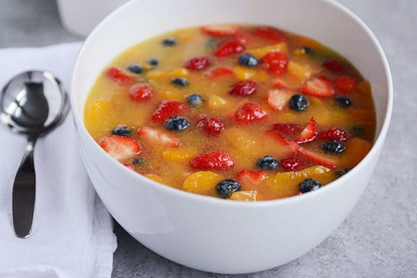

Fruit Soup

Description
This fruit soup is perfect for brunches, bridal/baby showers,
holiday dinners and everything in between..
It is so ridiculously yummy not to mention unique and lovely
(Im warning you now to be prepared for the onslaught of recipe
requests youll get when you make it; trust me on this one).
Ingredients
- 1/2 cup Granulated Sugar
- 1 cup Water
- 1 cup Peach Juice or Nectar
- 3 1/2 tbsp Tapioca
- 1 1/2 cups Orange Juice
- 2 cans Mandarin Oranges
- 1 can Sliced Peaches
- 2 cups Fresh Strawberries
- 1 cup Fresh Raspberries
- 1 cup Fresh Blueberries
Steps
- In a medium saucepan, combine the sugar, water, peach juice/nectar,
and tapioca. Bring the mixture to a boil and cook for 12 minutes,
stirring often. Remove from the heat and pour into a bowl or other
container. Stir in the orange juice and cover the dish. Refrigerate
for at least 4 hours until completely chilled or up to several days.
- Stir in the mandarin oranges, sliced peaches, strawberries, raspberries
and blueberries. Chill until ready to serve (no longer than an hour or
so once the fresh fruit has been added).
Main Page